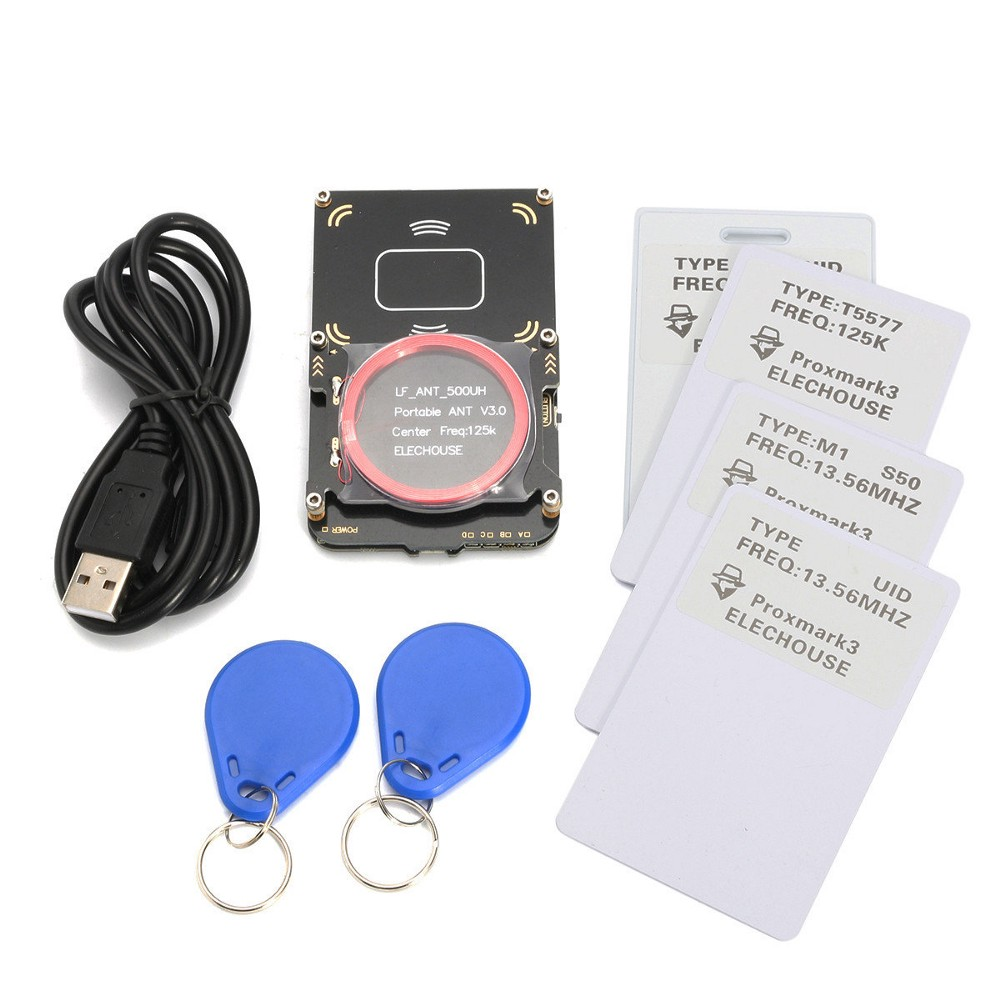

Использования Proxmark3 для клонирования пропуска через турникет
Пришла моя заветная посылка с “Proxmark3 Easy”. Если в кратце, то Proxmark3 — это мощный RFID инструмент, предназначенный для отслеживания, прослушивания и эмуляции всего, от низкочастотных (125 кГц) до высокочастотных (13,56 МГц) меток.

Перед тем как вы продолжите читать, спешу вас предупредить: Данная статья написана только для ознакомления, и ни в коем случае не призывает заниматься подделкой RFID меток, так как это противоречит УК РФ. Автор не несет ответственности за любые неправомерные действия, совершенные людьми с использованием информации из данной статьи.
Данная статья предполагает, что вы уже установили нужную прошивку на ваш Proxmark3 и умеете запускать утилиту для работы с ним, если нет то переходим сюда и читаем.
Ну что, приступим к исследованию RFID меток.
В моем учебном учреждении при входе стоят турникеты, и для того, чтобы пройти нужно приложить свой пропуск. И так как я часто забывал пропуск, я решил скопировать его на брелок T5577, который шел в комплекте к Proxmark3. Подобные брелки можно найти на AliExpress.
Сначало нужно узнать, что за тип метки используется в пропуске, для этого прикладываем его к считывателю и запускаем утилиту proxmark3:
./proxmark3 /dev/ttyACM0
Как утилита запуститься вводим:
proxmark3> lf search
После того как произойдет обнаружение пропуска, можно увидеть подобный текст:
Checking for known tags: EM410x pattern found: EM TAG ID : 1234567890 ...
В данном случае, мой пропуск оказался меткой типа EM410x с ID 1234567890 (понадобиться для копирования). EM410x — это формат RFID меток компании EM Microelectronic-Marin. Данная метка относиться к классу пассивных RFID меток, поскольку не имеет встроенного источника питания. Работает в частотном диапазоне 125 КГц.
Далее, запоминаем ID метки, и прикладываем к считывателю брелок, на который будем клонировать пропуск. И вводим команду:
proxmark3> lf em 410xwrite 1234567890 1
После этого можно увидеть:
Writing T55x7 tag with UID 0x1234567890 (clock rate: 64) #db# Started writing T55x7 tag ... #db# Clock rate: 64
Это говорит нам о том, что метка успешно скопировалась. Можно смело идти на учебу и проверять, заранее скажу что все отлично сработало ;)
Ссылки на тему исследования RFID меток: